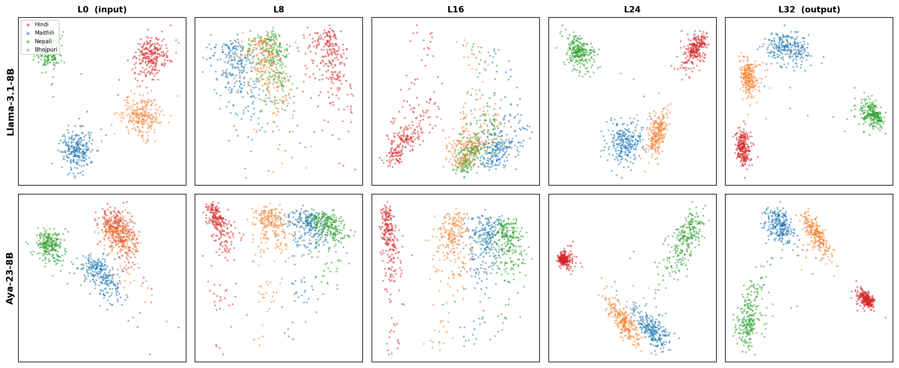
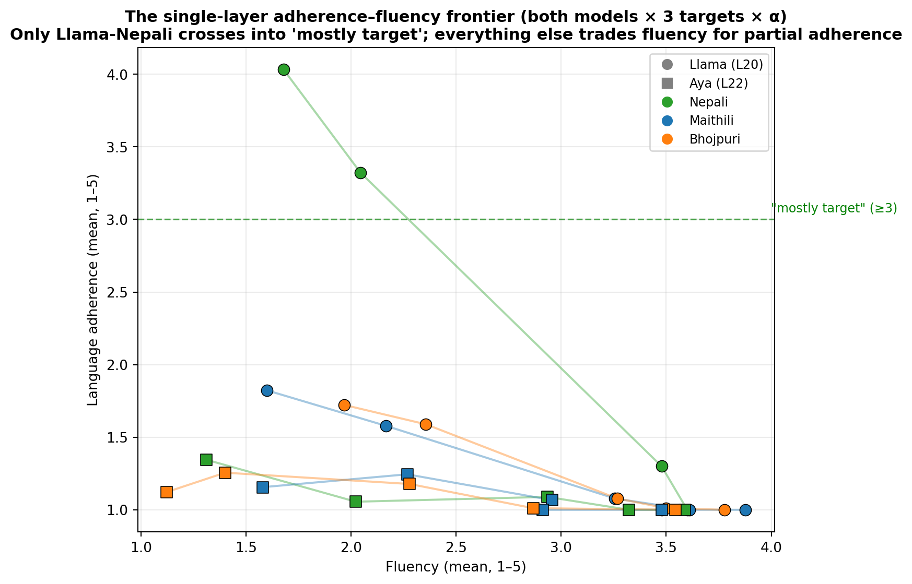
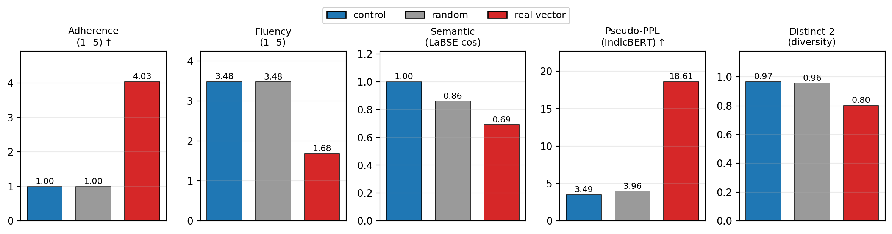
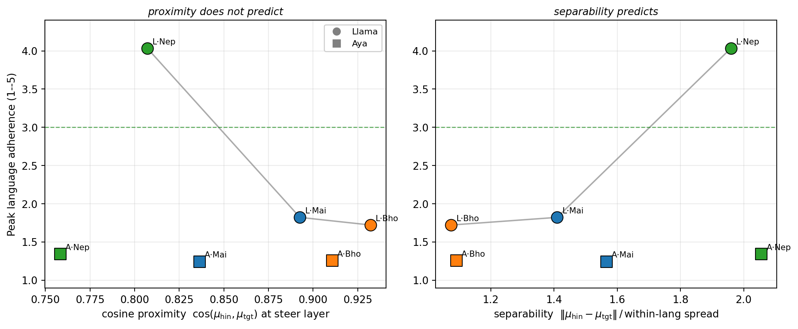

Method. Per-language activation memory banks from a 250-passage
parallel corpus give a centroid-difference direction
vℓ = μsrc − μtgt at each layer; generation is steered by
adding α·vℓ to the residual stream at every token position — no fine-tuning,
no new data, no weight updates.
What is this about?
Large multilingual decoders publish closed lists of supported languages: Llama-3.1 and
Aya-23 both claim Hindi but not its lower-resource Devanagari sisters —
Maithili, Nepali, and Bhojpuri. We ask a mechanistic question:
where, and how far, can a single inference-time direction move such a
model toward an unclaimed sister language, using only its Hindi representations?
Because the four languages share the Devanagari script and most subword tokens, any
shift must reflect representation geometry rather than vocabulary. Steering here is
used as a causal probe of where language identity is manipulable — not as a
deployment recipe.
Findings
1 · A shared hourglass, decodable everywhere. Both models show the same depth
profile: languages are distinct at the surface, merge mid-network, and re-separate
near the output — yet language identity stays ~99.5% linearly decodable at
every layer. Geometric prominence and information are different things.

Layer-wise language geometry (Llama-3.1-8B left, Aya-23-8B right): silhouette
dips mid-network while probe accuracy stays at ceiling.
2 · Steering works at the re-divergence onset — but only at the surface. Adding
the centroid-difference vector at layer 20 (Llama) / 22 (Aya) shifts generation toward
the target: Nepali-on-Llama reaches 4.03/5 language adherence (three-judge
cross-family LLM panel). But fluency collapses into repetition, and no
(model, target, α) cell is simultaneously target-adherent and fluent.

The single-layer adherence–fluency frontier across both models, three targets,
and all steering strengths. Only Llama–Nepali crosses into "mostly target".
3 · The lift is the direction, not the push. Matched-magnitude random directions
are inert on every metric (0/300 generations reach adherence ≥3). Multi-layer
composites and full depth-trajectory injection do not beat the best single
layer — while few-shot prompting does reach fluent sisters, so the ceiling is a limit
of single-direction steering, not model competence.

Direction specificity at the adherence peak: the real vector moves every
language metric; equal-magnitude random directions move none.
4 · Separability predicts steerability; proximity does not. Within Llama, peak
adherence follows the linear separability of the target from Hindi — reversing
the cosine-proximity ordering (Bhojpuri is closest yet least steerable). And
Hindi ≫ English as the steering source (4.03 vs 1.14 for Nepali) despite
English's pretraining dominance: transfer is driven by linguistic proximity at the
steering layer, not resource level.

Peak adherence vs cosine proximity (left; does not predict) and vs linear
separability at the steering layer (right; predicts, within-Llama).
The four-way parallel corpus is machine-translated (synthetic) — it is clearly
labelled as LLM-generated and not native-speaker-validated, and will be public at the
dataset link upon acceptance. The evaluation combines a three-judge cross-family LLM
panel (Krippendorff α = 0.86) with reference-free metrics (LaBSE, IndicBERT
pseudo-perplexity, code-mixing indices, GlotLID) and their per-generation convergent
validity.
Citation
@article{yadav2026singlevector,
title = {How Far Can a Single Vector Carry a Language? Mechanistic Limits of
Inference-Time Steering for Low-Resource Devanagari Languages},
author = {Yadav, Sumit and Giri, Santosh and Gautam, Ganesh},
year = {2026},
note = {Preprint, Research Square},
doi = {10.21203/rs.3.rs-10978527/v1}
}